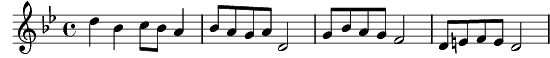

1. Quand la fleur s'éteint au soir des saisons,
Comm'un jour déteint au toit des maisons.
Demeure un parfum une essence encore
Demeurent en chacun le rouge et les ors.
Refrain:
Si tout meurt, si tout doit finir, finir
Si tout doit finir
Va, s'en ira la vie, la vie, s'en ira la vie
L'histoire tous les rêves et les utopies.
Si tout passe, un beau jour trépasse, trépasse
Un beau jour trépasse s'effacent les violons du bal du bal
Les violons du bal
Resteront les feux sur place et la part, la part des étoiles
2. Au dernier accord Lorsque les lumières
Délaissent le décor brisant son mystère
Subsistent en mémoire derrière le rideau
L'éclat des miroirs le chant du héros
Refrain
3. Quand le temps ternit trop tôt ton visage
Que l'âge assombrit tes traits, ton image
Demeurent en tes yeux trois goutt's de lumière
Un coin de ciel bleu la vie tout entière
Refrain
Coda:
La part des étoiles